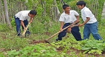
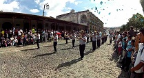

La reforestación es una operación en el ámbito de la silvicultura destinada a repoblar zonas que en el pasado histórico reciente (se suelen contabilizar 50 años) estaban cubiertas de bosques que han sido eliminados por diversos motivos. Las plantaciones y la reforestación de las tierras deterioradas y los proyectos sociales de siembra de árboles producen resultados positivos por los bienes que se producen y por los servicios ambientales que prestan.
El deporte es una actividad o ejercicio físico reglamentado, normalmente de carácter competitivo, que puede mejorar la condición física de quien lo practica, y tiene propiedades que lo diferencian del juego. El deporte tiene una gran influencia en la sociedad; destaca de manera notable su importancia en la cultura y en la construcción de la identidad nacional. En el ámbito práctico, el deporte tiene efectos tangibles y predominantemente positivos en las esferas de la educación, la economía y la salud pública.

En Guatemala cada 15 de septiembre se celebra la independencia y por esta actividad de suele realizar un desfile civico en el cual participan estudiantes de diferentes colegios con sus alegoricas bandas escolares, las cuales al sonar de los redoblantes van marchando por las calles de las localidades aledañas a sus centros educativos, esta es una actividad que requiere de mucho esfuerzo y practica para los estudiantes que participan en las bandas escolares ya que detras de cada melodia se reflejan muchas horas de esfuerzo al practicar cada una de estas bellas melodias.
Una de las actividades que mas marcan la celebracion de independencia es la "traida de la antorcha" la cual reune a grupos de amigos y familiares que al grito de libertan reflejan la independencia del pais, esta actividad consiste en ir a un lugar turistico a encender una antorcha para regresar al hogar con el fuego de libertad ardiendo por todo el recorrido.